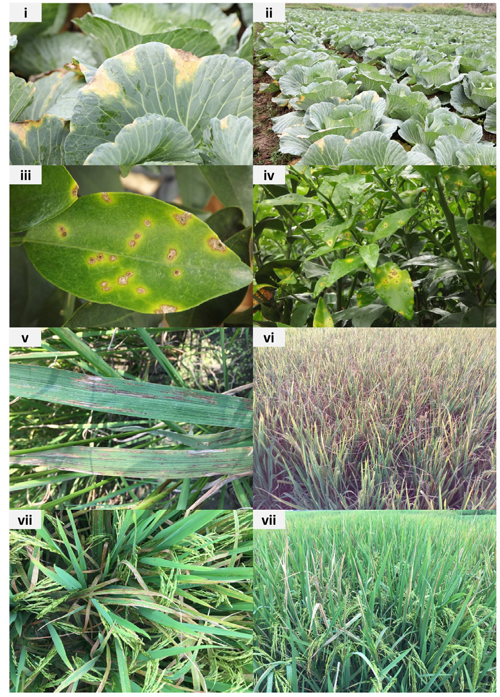

01Learning Objectives
Setelah menyelesaikan materi ini, mahasiswa mampu:
- menjelaskan garis evolusi arsitektur CNN dari LeNet sampai ConvNeXt dan motivasi di balik setiap lompatannya;
- menjelaskan degradation problem pada jaringan yang sangat dalam dan bagaimana residual connection pada ResNet mengatasinya;
- menghitung penghematan parameter depthwise separable convolution pada MobileNet dibanding konvolusi standar;
- membedakan konvolusi klasifikasi (VGG, ResNet, dst.) dengan detektor objek satu tahap seperti YOLO;
- membedakan feature extraction dan fine-tuning sebagai dua strategi transfer learning;
- menerapkan transfer learning memakai model terlatih ImageNet pada dataset kecil milik sendiri.
02Why This Matters
Pada Materi 05, CNN yang Anda hitung hanya berisi dua lapisan konvolusi dan sekitar 35 ribu parameter. Pertanyaan alaminya: apa yang terjadi bila kita menumpuk puluhan lapisan seperti itu? Dan apa yang kita lakukan bila dataset kita sendiri hanya berisi beberapa ratus citra — jauh dari cukup untuk melatih jaringan sedalam itu dari nol?
Dua pertanyaan itu ternyata saling berkaitan, dan sejarahnya berjalan berurutan. Peneliti mula-mula menumpuk lapisan konvolusi makin dalam (VGG) dan menemukan bahwa performa memang membaik — sampai titik tertentu. Setelah itu, menambah lapisan justru memperburuk bahkan akurasi pelatihan, bukan cuma akurasi validasi. Ini bukan overfitting; inilah yang disebut degradation problem, dan solusinya (ResNet) mengubah cara kita merancang jaringan dalam secara permanen. Begitu arsitektur dalam menjadi stabil dan terbukti menjadi ekstraktor fitur visual yang andal, muncul gagasan kedua: mengapa melatih ulang semuanya dari nol untuk setiap dataset baru? Model yang sudah dilatih pada 1,4 juta citra ImageNet sudah "tahu" cara mengenali tepi, tekstur, dan bentuk secara umum — pengetahuan itu bisa dipakai ulang. Itulah transfer learning, dan ia adalah alasan mengapa Anda tidak perlu 1,4 juta citra untuk membangun pengklasifikasi citra yang baik.
Satu kalimat yang merangkum seluruh materi ini
Arsitektur CNN modern adalah jawaban atas satu masalah teknis (bagaimana melatih jaringan yang sangat dalam tanpa macet) dan satu masalah praktis (bagaimana memakai jaringan sedalam itu ketika data Anda sendiri sangat terbatas) — dan transfer learning adalah jawaban untuk masalah kedua.
03Prerequisite
- Materi 05 — konvolusi, padding, stride, pooling, parameter sharing, dan backpropagation pada CNN. Seluruh materi ini dibangun langsung di atasnya.
- Gagasan umum overfitting: model yang menghafal data latih tetapi gagal menggeneralisasi ke data baru.
- Konsep dasar pelatihan jaringan: loss function, gradient descent, dan learning rate.
04Core Concept
Garis waktu evolusi arsitektur CNN
Tujuh arsitektur berikut bukan daftar acak — masing-masing lahir untuk menjawab keterbatasan arsitektur sebelumnya.
| Arsitektur | Tahun | Lapisan | Parameter (±) | Gagasan utama |
|---|---|---|---|---|
| LeNet-5 | 1998 | 7 | 60 ribu | CNN pertama yang bekerja: konvolusi + pooling + dense untuk digit tulisan tangan. |
| AlexNet | 2012 | 8 | 62 juta | ReLU, dropout, dan pelatihan di GPU — memenangkan ILSVRC 2012 dengan selisih besar. |
| VGG16 | 2014 | 16 | 138 juta | Tumpuk kernel 3×3 kecil secara konsisten; kedalaman sebagai sumber performa. |
| GoogLeNet (Inception v1) | 2014 | 22 | 6,8 juta | Inception module: beberapa ukuran kernel paralel + bottleneck 1×1 untuk hemat parameter. |
| ResNet-50 | 2015 | 50 | 25,6 juta | Residual connection memecahkan degradation problem — jaringan ratusan lapisan jadi bisa dilatih. |
| MobileNetV2 | 2018 | 53 | 3,4 juta | Depthwise separable convolution — dirancang untuk ponsel dan perangkat edge. |
| ConvNeXt-T | 2022 | — | 28 juta | CNN murni yang "dimodernisasi" dengan ide desain dari Vision Transformer. |
Perhatikan pola yang tidak intuitif: GoogLeNet (22 lapisan) punya parameter jauh lebih sedikit daripada VGG16 (16 lapisan). Jumlah lapisan dan jumlah parameter adalah dua hal yang berbeda — dan sebagian besar materi ini menjelaskan mengapa.
Dua keluarga tugas: klasifikasi vs deteksi
Ketujuh arsitektur di atas pada dasarnya menjawab satu tugas: satu citra → satu label. YOLO (You Only Look Once) menjawab tugas yang berbeda: satu citra → banyak objek, masing-masing dengan lokasi (bounding box) dan label. YOLO tetap memakai tulang punggung (backbone) konvolusi yang sama prinsipnya seperti ResNet atau VGG — bedanya ada pada kepala jaringan (head) dan cara ia dilatih. Kita bahas YOLO sebagai keluarga terpisah di bagian 05.
Transfer learning: pakai ulang, jangan mulai dari nol
Transfer learning adalah strategi memakai bobot model yang sudah dilatih pada dataset besar (umumnya ImageNet, 1,4 juta citra, 1000 kelas) sebagai titik awal untuk tugas baru, alih-alih menginisialisasi bobot secara acak. Ada dua mode:
| Mode | Yang dilakukan | Kapan dipakai |
|---|---|---|
| Feature extraction | Bekukan (freeze) seluruh lapisan konvolusi; hanya latih classifier head yang baru. | Dataset baru sangat kecil dan mirip karakteristiknya dengan ImageNet. |
| Fine-tuning | Bekukan sebagian besar lapisan awal, lalu buka (unfreeze) beberapa blok teratas dan latih dengan learning rate kecil. | Dataset baru lebih besar atau cukup berbeda dari ImageNet. |
05Detailed Explanation
VGG — kedalaman lewat kernel kecil yang konsisten
Sebelum VGG, arsitektur sering memakai kernel besar (7×7, 11×11) di lapisan awal. VGG mengajukan gagasan sebaliknya: pakai hanya kernel 3×3, tetapi tumpuk beberapa lapisan berurutan. Dua lapisan konvolusi 3×3 berurutan memiliki receptive field efektif yang setara dengan satu lapisan 5×5 — tetapi dengan parameter lebih sedikit dan dua fungsi aktivasi non-linear, bukan satu. Kita hitung ini di bagian 06.
Harga dari pendekatan ini: VGG16 memiliki 138 juta parameter, dan lebih dari 100 juta di antaranya berada di lapisan dense setelah flatten — bukan di lapisan konvolusinya. Inilah target utama yang diserang oleh arsitektur-arsitektur sesudahnya.
GoogLeNet — lebar sebagai alternatif dalam
GoogLeNet mengajukan pertanyaan berbeda: mengapa harus memilih satu ukuran kernel di setiap lapisan? Inception module menjalankan beberapa cabang konvolusi (1×1, 3×3, 5×5) dan satu cabang pooling secara paralel pada input yang sama, lalu menggabungkan (concatenate) seluruh hasilnya pada dimensi kanal. Jaringan tidak perlu "memilih" ukuran kernel terbaik — ia mempelajari bobot yang menentukan cabang mana yang paling berguna.
Trik yang membuat ini hemat parameter adalah konvolusi 1×1 sebagai bottleneck: sebelum konvolusi 3×3 atau 5×5 yang mahal, sisipkan konvolusi 1×1 untuk mengecilkan jumlah kanal terlebih dahulu. Konvolusi 1×1 tidak melihat tetangga spasial sama sekali — ia hanya mencampur informasi antar-kanal pada satu titik pixel, sehingga sangat murah secara komputasi namun efektif mengurangi dimensi sebelum operasi yang mahal.
ResNet — memecahkan degradation problem
Inilah temuan yang mengejutkan komunitas riset pada 2015: jaringan polos (plain network, tanpa jalur pintas) dengan 56 lapisan memiliki error pelatihan yang lebih tinggi daripada versi 20 lapisannya. Bukan error validasi — error pelatihan. Ini membuktikan masalahnya bukan overfitting, melainkan jaringan yang sedalam itu sulit dioptimasi sama sekali. Inilah degradation problem.
Solusinya elegan: tambahkan jalur pintas (skip connection) yang melewatkan input langsung ke output blok, dijumlahkan dengan hasil transformasinya:
H(x) = F(x) + x
H(x) = output blok
F(x) = transformasi yang dipelajari (conv → BN → ReLU → conv → BN)
x = input blok, dilewatkan langsung lewat jalur pintas
Bila suatu blok residual tidak dibutuhkan untuk tugas tertentu, jaringan cukup mempelajari F(x) =
0, sehingga H(x) = x — blok tersebut berperilaku seperti identity dan tidak merusak
apa pun. Jauh lebih mudah mempelajari "jangan mengubah apa pun" daripada mempelajari pemetaan identity
secara eksplisit lewat tumpukan lapisan non-linear. Turunan matematisnya kita bahas di bagian 06 —
di situlah terlihat jelas mengapa jalur pintas ini membuat gradient tetap mengalir meski jaringannya
sangat dalam.
MobileNet — konvolusi yang dipecah menjadi dua tahap murah
VGG dan ResNet dirancang untuk akurasi maksimum di server dengan GPU besar. MobileNet dirancang untuk kondisi sebaliknya: ponsel, kamera IoT, dan papan tertanam (embedded board) dengan memori dan daya yang sangat terbatas.
Gagasan intinya adalah depthwise separable convolution: alih-alih satu konvolusi standar yang sekaligus menyaring ruang (spasial) dan mencampur kanal, pecah menjadi dua tahap berurutan:
- Depthwise convolution — satu filter spasial per kanal input, bekerja terpisah pada setiap kanal. Tidak ada percampuran antar-kanal di tahap ini.
- Pointwise convolution — konvolusi 1×1 biasa yang mencampur hasil antar-kanal.
Hasilnya setara secara fungsional dengan konvolusi standar, tetapi jumlah parameter dan komputasinya jauh lebih kecil. Perhitungan lengkapnya ada di bagian 06.
ConvNeXt — CNN murni yang "dimodernisasi"
ConvNeXt lahir setelah Vision Transformer (Materi 07) menunjukkan performa yang sangat kuat. Pertanyaan penelitiannya: apakah keunggulan itu benar-benar berasal dari mekanisme attention, atau dari pilihan desain lain (ukuran patch, normalisasi, rasio lapisan) yang bisa diterapkan kembali ke CNN biasa? ConvNeXt mengambil ResNet lalu memodernisasinya langkah demi langkah: kernel depthwise 7×7 yang lebih besar, lebih sedikit fungsi aktivasi per blok, LayerNorm menggantikan BatchNorm, dan struktur inverted bottleneck. Hasilnya: CNN murni tanpa satu pun mekanisme attention, namun menyamai bahkan mengungguli Vision Transformer pada ImageNet. Ini relevan sebagai jembatan menuju Materi 07.
YOLO — deteksi objek dalam satu kali lintasan
Sebelum YOLO, pendekatan populer untuk deteksi objek adalah two-stage: tahap pertama mengusulkan ribuan kandidat wilayah (region proposals), tahap kedua mengklasifikasikan tiap kandidat satu per satu. Akurat, tetapi lambat — jauh dari real-time.
YOLO mengubah deteksi objek menjadi satu masalah regresi tunggal. Citra dibagi menjadi grid S×S; setiap sel grid, dalam satu kali forward pass, langsung memprediksi koordinat bounding box, skor keyakinan (confidence), dan probabilitas kelas secara bersamaan — karena itulah namanya You Only Look Once. Konsekuensinya: YOLO versi awal mampu berjalan pada 45 frame per detik di GPU kelas atas saat itu, cukup cepat untuk video real-time, dengan konsekuensi akurasi lokalisasi sedikit di bawah pendekatan two-stage untuk objek kecil yang berdempetan.
06Mathematical Foundation
Mengapa dua kernel 3×3 lebih hemat daripada satu kernel 5×5
Misalkan jumlah kanal masuk dan keluar sama-sama C. Bandingkan jumlah parameternya:
Satu konvolusi 5×5: 5 × 5 × C × C = 25C²
Dua konvolusi 3×3 berurutan: 2 × (3 × 3 × C × C) = 18C²
Penghematan = (25C² − 18C²) / 25C² = 28%Dengan C = 64: 25 × 64² = 102.400 parameter untuk satu kernel 5×5, berbanding 18 × 64² = 73.728 parameter untuk dua kernel 3×3 — dan dua kernel 3×3 menyumbang dua fungsi aktivasi non-linear, bukan satu, sehingga jaringan juga lebih ekspresif. Inilah alasan matematis di balik keputusan desain VGG.
Depthwise separable convolution secara numerik
Misalkan ukuran kernel Dk = 3, kanal masuk M = 32, kanal keluar
N = 64, pada feature map 1 posisi (untuk membandingkan jumlah parameter, ukuran spasial
feature map tidak relevan).
D_k × D_k × M × N
= 3 × 3 × 32 × 64
= 18.432 parameterDepthwise: 3×3×32 = 288
Pointwise: 1×1×32×64 = 2.048
Total = 2.336 parameterRasio keduanya adalah 2.336 / 18.432 ≈ 12,7% — penghematan sekitar delapan kali lipat. Secara umum, rasio ini mengikuti rumus:
1 1
rasio = ─── + ────
N D_k²
Contoh di atas: 1/64 + 1/9 = 0,0156 + 0,111 ≈ 0,127 (cocok dengan hasil hitungan manual)
Semakin besar jumlah kanal keluar N, semakin besar pula penghematannya — dan pada jaringan
modern, N sering bernilai ratusan. Inilah sebabnya MobileNet dapat mencapai akurasi yang
layak dengan parameter puluhan kali lebih sedikit daripada VGG.
Mengapa residual connection menjaga gradient tetap mengalir
Ingat dari Materi 05 bahwa backpropagation memperbaiki bobot lewat turunan (gradient) loss terhadap bobot tersebut. Pada jaringan polos yang sangat dalam, gradient harus melewati puluhan fungsi non-linear berurutan — dan nilainya bisa menyusut mendekati nol di setiap lapisan (vanishing gradient), sehingga lapisan-lapisan awal nyaris berhenti belajar.
Turunkan gradient pada satu blok residual H(x) = F(x) + x terhadap input x:
∂H/∂x = ∂F/∂x + 1
Suku "+ 1" inilah kuncinya. Betapapun kecilnya ∂F/∂x (bahkan mendekati nol),
gradient tetap memiliki jalur langsung bernilai 1 untuk mengalir ke belakang lewat jalur pintas. Pada
jaringan polos tanpa jalur pintas, tidak ada jaminan semacam ini — gradient sepenuhnya bergantung pada
hasil kali puluhan turunan berurutan, yang dapat menyusut secara eksponensial.
Perbandingan parameter: ringkasan kuantitatif
| Arsitektur | Parameter | Top-5 error ILSVRC (±) | Cocok untuk |
|---|---|---|---|
| VGG16 | 138 juta | 7,3% | Baseline akademik, keterbatasan memori bukan isu |
| GoogLeNet | 6,8 juta | 6,7% | Akurasi tinggi dengan anggaran parameter ketat |
| ResNet-50 | 25,6 juta | 3,6% | Backbone umum untuk klasifikasi maupun deteksi |
| MobileNetV2 | 3,4 juta | ~10%* | Ponsel, kamera edge, robot kecil |
*MobileNetV2 dievaluasi belakangan dengan protokol yang sedikit berbeda; dibandingkan langsung ia memang mengorbankan sebagian akurasi demi ukuran model yang jauh lebih kecil dan latensi yang jauh lebih rendah.
07Illustration
08Example
Mari terapkan transfer learning pada kasus yang realistis: mengklasifikasikan penyakit daun tanaman dari foto, dengan dataset yang hanya berisi beberapa ratus citra per kelas — jauh terlalu kecil untuk melatih ResNet dari nol.

Langkah strategi: mulai dari ResNet50 yang sudah dilatih pada ImageNet, bekukan seluruh base model, pasang classifier head baru.
| Komponen | Status | Alasan |
|---|---|---|
| Base ResNet50 (lapisan konvolusi) | Beku (trainable=False) | Sudah mempelajari fitur visual umum dari 1,4 juta citra ImageNet — tepi, tekstur, bentuk. |
| Global Average Pooling | Tanpa bobot | Meratakan feature map akhir menjadi satu vektor per kanal. |
| Dense head baru (kelas penyakit) | Dilatih dari nol | Spesifik untuk tugas: jumlah neuron keluaran = jumlah kelas penyakit pada dataset ini. |
Setelah memahami strateginya — bentuk kodenya
base_model = keras.applications.ResNet50(
weights="imagenet", include_top=False, input_shape=(224, 224, 3)
)
base_model.trainable = False # tahap 1: feature extraction
model = keras.Sequential([
base_model,
layers.GlobalAveragePooling2D(),
layers.Dropout(0.3),
layers.Dense(n_kelas_penyakit, activation="softmax"),
])
model.compile(optimizer="adam", loss="categorical_crossentropy", metrics=["accuracy"])
model.fit(train_ds, validation_data=val_ds, epochs=10)
# tahap 2 (opsional): fine-tuning bila akurasi tahap 1 belum cukup
base_model.trainable = True
for layer in base_model.layers[:-20]: # buka hanya 20 lapisan teratas
layer.trainable = False
model.compile(optimizer=keras.optimizers.Adam(1e-5), # learning rate jauh lebih kecil
loss="categorical_crossentropy", metrics=["accuracy"])
model.fit(train_ds, validation_data=val_ds, epochs=5)Learning rate pada tahap fine-tuning sengaja dibuat 100 kali lebih kecil. Bobot pretrained sudah bagus — pembaruan yang terlalu besar justru bisa merusaknya (fenomena yang disebut catastrophic forgetting).
09Real-world Application
- Diagnosis penyakit tanaman
- Transfer learning dari ImageNet ke foto daun memungkinkan aplikasi deteksi penyakit pertanian dibangun dengan dataset yang hanya berisi ratusan, bukan jutaan, citra per kelas.
- Pencitraan medis
- ResNet dan arsitektur serupa menjadi backbone umum untuk klasifikasi citra rontgen, CT, dan patologi, sering kali di-fine-tune dari model pretrained ImageNet meski domainnya sangat berbeda.
- Aplikasi di perangkat mobile
- MobileNet dan turunannya menjalankan deteksi objek, segmentasi wajah untuk filter kamera, dan OCR langsung di ponsel, tanpa mengirim data ke server.
- Kendaraan otonom dan CCTV real-time
- Keluarga YOLO dipakai luas untuk mendeteksi kendaraan, pejalan kaki, dan rambu secara real-time karena kecepatannya yang jauh melampaui detektor two-stage.
- Pengendalian mutu industri
- Fine-tuning model pretrained pada foto produk cacat mempercepat pengembangan sistem inspeksi visual tanpa perlu dataset sebesar riset akademik.
- Pencarian visual e-commerce
- Fitur dari lapisan akhir CNN pretrained (sebelum classifier) dipakai sebagai representasi untuk mencari produk serupa berdasarkan kemiripan visual.
10Common Misconceptions
"Jaringan yang lebih dalam selalu lebih akurat."
Hanya benar sampai batas tertentu, dan hanya bila masalah pengoptimasiannya ditangani. Jaringan polos 56 lapisan justru lebih buruk daripada versi 20 lapisannya — inilah degradation problem yang mendorong lahirnya ResNet.
"Transfer learning berarti memakai model orang lain tanpa perlu memahami cara kerjanya."
Justru sebaliknya: memilih lapisan mana yang dibekukan, berapa learning rate fine-tuning, dan kapan risiko catastrophic forgetting muncul, semuanya memerlukan pemahaman tentang apa yang dipelajari setiap lapisan CNN.
"Fine-tuning harus selalu dilakukan agar hasilnya maksimal."
Bergantung pada ukuran dan kemiripan dataset dengan ImageNet. Dataset kecil dan mirip cukup dengan feature extraction murni; membuka terlalu banyak lapisan pada dataset kecil justru berisiko overfitting.
"YOLO adalah satu-satunya cara melakukan deteksi objek."
YOLO adalah salah satu keluarga detektor single-stage yang populer. Keluarga R-CNN (R-CNN, Fast R-CNN, Faster R-CNN) adalah pendekatan two-stage yang masih dipakai ketika akurasi lokalisasi lebih diprioritaskan daripada kecepatan.
"MobileNet selalu jauh kurang akurat dibanding ResNet."
Selisihnya sering kali lebih kecil daripada yang dibayangkan, sementara penghematan ukuran model dan latensinya mencapai puluhan kali lipat. Pertanyaan yang tepat bukan "mana yang paling akurat", melainkan "trade-off mana yang sesuai dengan anggaran komputasi perangkat sasaran".
11Key Takeaways
- VGG membuktikan kedalaman berguna, dengan menumpuk kernel 3×3 kecil secara konsisten — tapi boros parameter di lapisan dense.
- GoogLeNet membuktikan lebar juga berguna, lewat Inception module dan bottleneck 1×1 yang menghemat parameter drastis meski lapisannya lebih banyak dari VGG.
- ResNet memecahkan degradation problem lewat residual connection: H(x) = F(x) + x, dengan turunan ∂H/∂x = ∂F/∂x + 1 yang menjamin gradient tetap mengalir.
- MobileNet memecah konvolusi standar menjadi depthwise + pointwise, menghemat parameter hingga ~8× pada contoh materi ini.
- ConvNeXt membuktikan CNN murni masih kompetitif ketika dimodernisasi dengan ide desain dari Vision Transformer.
- YOLO mengubah deteksi objek menjadi satu regresi tunggal, memungkinkan deteksi real-time dengan trade-off akurasi lokalisasi pada objek kecil.
- Transfer learning punya dua mode: feature extraction (bekukan semua, latih head) untuk dataset kecil dan mirip ImageNet, fine-tuning (buka sebagian, learning rate kecil) untuk dataset lebih besar atau berbeda domain.
12Preparation for Practice
Praktikum materi ini berpusat pada transfer learning sungguhan: Anda akan memuat model pretrained, membekukannya, memasang classifier head baru, dan membandingkan hasilnya dengan dan tanpa fine-tuning.
- Google Colab dengan akses GPU (Runtime → Change runtime type → GPU) — dataset kecil pun lebih cepat dilatih dengan GPU.
- TensorFlow/Keras atau PyTorch dengan modul
applications/timmuntuk memuat bobot pretrained ImageNet. - Dataset kecil terorganisir dalam folder per kelas (dua sampai lima kelas sudah cukup untuk melihat efek transfer learning dengan jelas).
Notebook resmi Hugging Face
Unit 2 kurikulum Hugging Face menyediakan dua notebook hands-on yang langsung relevan dengan materi ini: Transfer Learning with VGG19 dan Using ResNet with timm. Keduanya tautannya tersedia di bagian 13 di bawah.
13Practice
Ringkasan tugas praktikum:
- Pilih atau kumpulkan dataset kecil (dua sampai lima kelas, minimal 50 citra per kelas).
- Bangun model feature extraction: ResNet50 atau VGG19 pretrained ImageNet, base dibekukan, classifier head baru. Catat akurasi validasinya.
- Lanjutkan ke fine-tuning: buka 15–20 lapisan teratas, turunkan learning rate 100×, latih ulang beberapa epoch. Bandingkan akurasinya dengan tahap feature extraction.
- Hitung manual jumlah parameter yang dibekukan vs dilatih pada kedua tahap, lalu bandingkan dengan jumlah parameter bila model dilatih dari nol.
- Visualisasikan beberapa feature map dari lapisan awal dan lapisan akhir base model — perhatikan bahwa lapisan awal menangkap tepi/tekstur generik, lapisan akhir lebih spesifik.
- Tuliskan refleksi singkat: pada titik mana fine-tuning mulai menurunkan akurasi validasi (indikasi overfitting atau catastrophic forgetting)?
14Reflection
- Mengapa GoogLeNet bisa memiliki parameter jauh lebih sedikit daripada VGG16 meski lapisannya jauh lebih banyak? Jelaskan peran konvolusi 1×1 di dalamnya.
- Turunan ∂H/∂x = ∂F/∂x + 1 pada residual connection. Apa yang terjadi pada gradient bila ∂F/∂x mendekati nol, dan mengapa ini penting untuk jaringan yang sangat dalam?
- Pada kasus apa Anda akan memilih MobileNet dibanding ResNet, dan pada kasus apa sebaliknya? Pertimbangkan perangkat sasaran, bukan hanya akurasi.
- Mengapa learning rate pada tahap fine-tuning harus jauh lebih kecil daripada saat melatih classifier head dari nol?
- YOLO mengorbankan sebagian akurasi lokalisasi demi kecepatan. Pada aplikasi apa trade-off ini masuk akal, dan pada aplikasi apa sebaliknya lebih baik memakai detektor two-stage?
- Bila dataset Anda sangat berbeda dari ImageNet (misalnya citra satelit atau citra medis inframerah), apakah transfer learning dari ImageNet tetap masuk akal? Jelaskan alasannya.
15References
- Hugging Face Community Computer Vision Course — Unit 2: Common Architectures dan ResNet.
- Simonyan, K., & Zisserman, A. (2014). Very Deep Convolutional Networks for Large-Scale Image Recognition (VGG).
- Szegedy, C. et al. (2014). Going Deeper with Convolutions (GoogLeNet).
- He, K., Zhang, X., Ren, S., & Sun, J. (2015). Deep Residual Learning for Image Recognition (ResNet).
- Howard, A.G. et al. (2017). MobileNets: Efficient Convolutional Neural Networks for Mobile Vision Applications.
- Liu, Z. et al. (2022). A ConvNet for the 2020s (ConvNeXt).
- Redmon, J. et al. (2016). You Only Look Once: Unified, Real-Time Object Detection (YOLO).
- Notebook resmi Unit 2: Transfer Learning with VGG19 dan Using ResNet with timm.
- Halaman Referensi COM Computer Vision.
Sudah memahami seluruh bagian materi ini? Tandai agar progress belajar Anda tercatat di peramban.